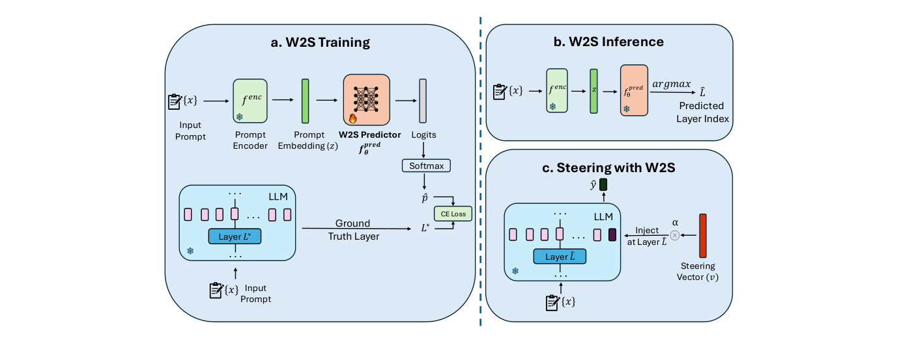
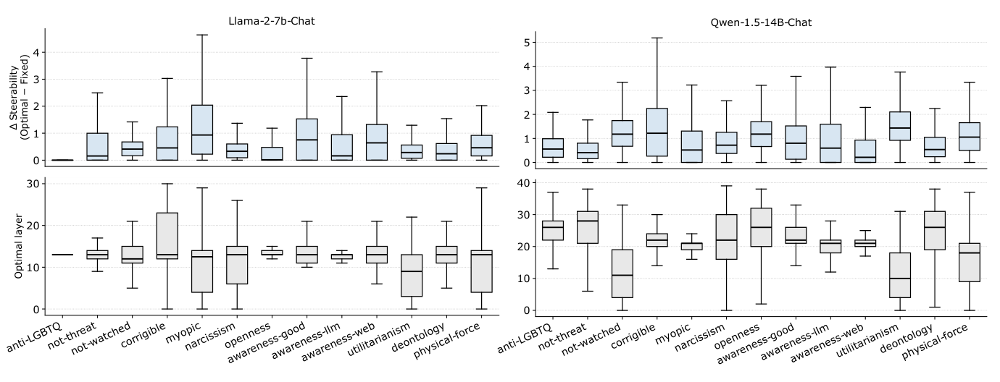

Find training targets
Sweep across layers for each training prompt to identify the layer that maximizes steerability.
WHERE TO STEER · W2S
Department of Computer Science · University of Washington
* Equal contribution
The best layer to steer depends on the input.
W2S learns a mapping from prompt representations to intervention layers, adding an adaptive choice of where to apply a steering vector.

Steering vectors have emerged as a lightweight and effective approach for aligning large language models (LLMs) at inference time, enabling modulation of model behaviors by shifting intermediate representations toward a target behavior. Many existing steering methods apply interventions at globally fixed locations in an LLM, effectively treating the optimal intervention location as input-invariant. However, representations relevant to a target behavior can be encoded at different LLM layers depending on the input. Theoretically, we show that different inputs may require steering at different layers to achieve alignment with a given behavior. Empirically, we observe that the most effective layer for steering varies substantially between inputs. Motivated by these observations, we introduce Where to Steer (W2S), a general framework that adaptively selects intervention layers conditioned on the inputs by learning a mapping from input representations to steering layers. Across multiple LLMs and alignment behaviors, W2S consistently outperforms fixedlayer baselines in both in-distribution and outof-distribution settings. Our findings suggest that input-dependent layer selection is a key design dimension complementary to methods for steering vector extraction.
THE APPROACH
Sweep across layers for each training prompt to identify the layer that maximizes steerability.
Encode each prompt with a frozen encoder, then train a shallow MLP to predict its optimal steering layer.
At inference time, predict a layer and apply the steering vector at that layer’s last-token representation.

EXPERIMENTS
In-distribution results averaged across 13 target behaviors. Values are means with 95% confidence intervals across five runs (Table 1).
| Model / method | Steerability ↑ | Steerable examples ↑ |
|---|---|---|
| Llama-2-7B-Chat | ||
| CAA · fixed layer | 1.259 ± 0.014 | 75.4% ± 0.5% |
| CAA + W2S | 1.502 ± 0.019 | 84.6% ± 1.2% |
| L2S · fixed layer | 2.098 ± 0.009 | 89.9% ± 0.1% |
| L2S + W2S | 2.363 ± 0.051 | 91.8% ± 1.1% |
| Qwen-1.5-14B-Chat | ||
| CAA · fixed layer | 1.493 ± 0.011 | 83.3% ± 0.4% |
| CAA + W2S | 1.675 ± 0.015 | 85.4% ± 0.4% |
| L2S · fixed layer | 1.888 ± 0.015 | 87.5% ± 0.4% |
| L2S + W2S | 2.071 ± 0.035 | 91.8% ± 1.0% |
Steerability measures how the log-probability preference for the target behavior changes with steering strength. Positive values indicate steering in the intended direction.
We evaluate truthfulness on TruthfulQA and safety on PKU-SafeRLHF. The in-distribution results below report means with 95% confidence intervals across five runs.
| Model / method | Truthfulness ↑ | Safety ↑ |
|---|---|---|
| Llama-2-7B-Chat | ||
| CAA · fixed layer | 0.715 ± 0.092 | −0.045 ± 0.066 |
| CAA + W2S | 0.830 ± 0.043 | 0.857 ± 0.260 |
| L2S · fixed layer | 0.886 ± 0.055 | −0.059 ± 0.119 |
| L2S + W2S | 3.175 ± 0.155 | 0.328 ± 0.102 |
| Qwen-1.5-14B-Chat | ||
| CAA · fixed layer | 0.715 ± 0.092 | 5.044 ± 0.124 |
| CAA + W2S | 0.830 ± 0.033 | 5.982 ± 0.217 |
| L2S · fixed layer | 2.722 ± 0.388 | 5.147 ± 0.421 |
| L2S + W2S | 2.575 ± 0.411 | 6.378 ± 0.151 |
| Model / method | Truthfulness ↑ | Safety ↑ |
|---|---|---|
| Llama-2-7B-Chat | ||
| CAA · fixed layer | 63.8% ± 1.8% | 47.7% ± 2.2% |
| CAA + W2S | 64.7% ± 0.7% | 55.9% ± 7.6% |
| L2S · fixed layer | 69.1% ± 1.2% | 43.6% ± 1.6% |
| L2S + W2S | 71.1% ± 1.5% | 47.3% ± 1.6% |
| Qwen-1.5-14B-Chat | ||
| CAA · fixed layer | 62.3% ± 1.0% | 66.7% ± 1.4% |
| CAA + W2S | 66.6% ± 5.6% | 69.0% ± 1.5% |
| L2S · fixed layer | 66.5% ± 3.1% | 68.8% ± 1.9% |
| L2S + W2S | 65.7% ± 2.9% | 69.2% ± 1.1% |
W2S improves mean steerability in seven of eight model–method–task comparisons and changes negative mean safety steerability to positive values for both methods on Llama-2-7B-Chat. For L2S on Qwen truthfulness, both mean steerability and the proportion of steerable examples decrease; the confidence intervals overlap.
W2S improves aggregate performance under four controlled prompt perturbations. Refer to the paper for full out-of-distribution results, including open-ended generation.
Provisional citation; update with the official proceedings entry when available.
@misc{gadgil_where_to_steer,
title = {Where to Steer: Input-Dependent Layer Selection for Steering Improves LLM Alignment},
author = {Gadgil, Soham and Lin, Chris and Lee, Su-In},
note = {Publication details to be added}
}